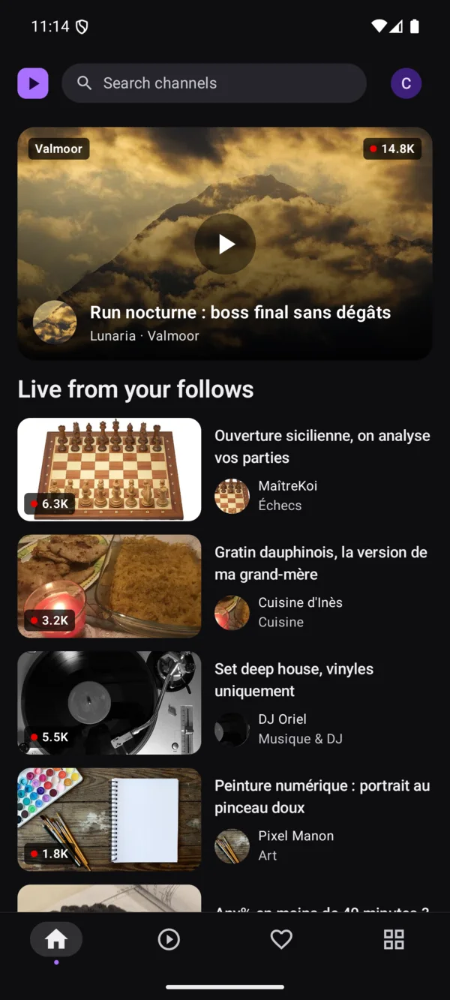
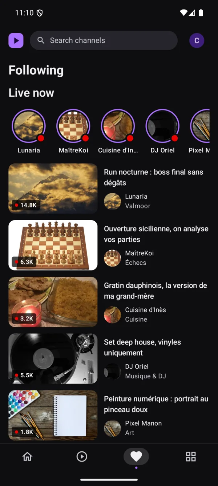
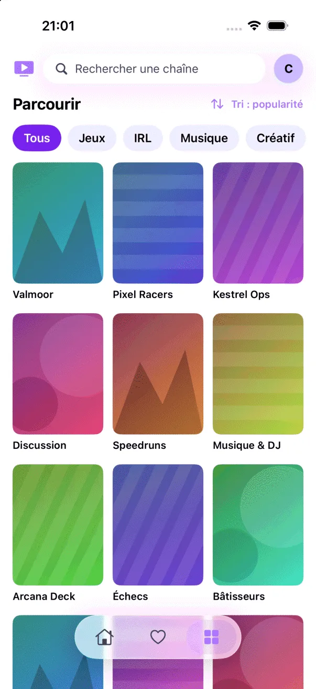
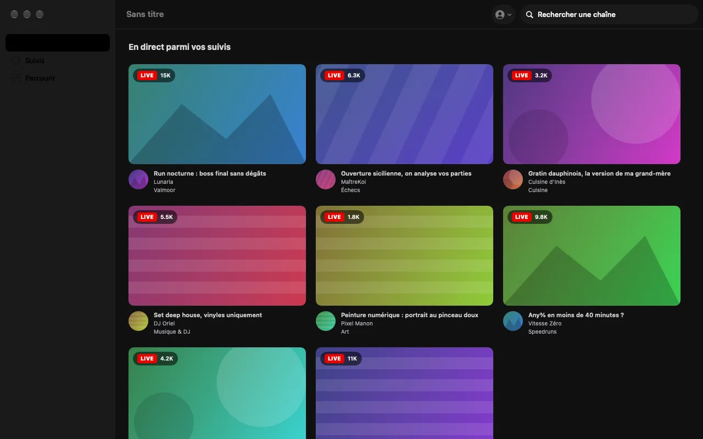
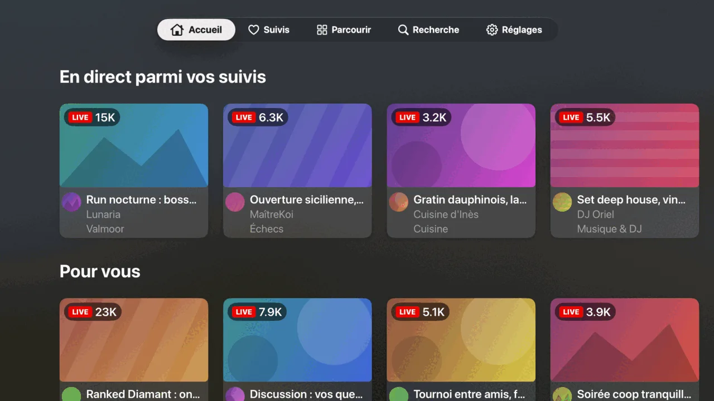

Twitch, at home on every screen.
Skerry is an open-source viewer for Android, iPhone, Mac and Apple TV. Real native lists, real native chat, one shared Kotlin core.
Unofficial. Not affiliated with Twitch. Read the fine print
Browse like an app,
not a website.
Live channels, categories and the people you follow, drawn natively with real artwork, so a list of fifty streams stays easy to scan.



Android shown. Every channel, photo and message here is fictional demo data, and the photographs are public domain or CC0.
Chat that keeps up.
Drawn natively, not scraped into a web page, so it stays smooth when a channel gets busy.
- Everything people sendReplies, highlighted mentions, subscription and gift notices, announcements and badges.
- Emotes that move7TV, BetterTTV and FrankerFaceZ, animated and zero-width ones included.
- Never lose your placeScroll up to read, then a pill takes you back to live.
And on the rest
of your screens.
The same core runs on iPhone, Mac and Apple TV, each with its own native interface and its own habits.
SwiftUI, with a sheet that follows your thumb.
The player is a draggable sheet that collapses to a mini strip, the way a music app does, so you keep browsing while a stream plays. Liquid Glass tab bar and controls.



A real Mac window.
Sidebar navigation, a resizable chat column next to the video, a floating mini player, and an emote picker that opens as a popover.


Made for the remote.
Focus, not touch: every screen is built around the Siri Remote, with Back behaving the way the platform expects. The Android TV app gets the same care with the D-pad.


The Apple apps' screenshots still use the simpler demo artwork; they are due for the same photo treatment. Android TV screenshots are still to come.
Run the demo.
Demo mode needs no account and no network, so you can see every screen straight away.
There are no pre-built downloads yet. Skerry builds from source: JDK 21, the Android SDK and an emulator or a phone. The Apple apps build with Xcode; apple/README.md walks through it.
# get it
git clone https://github.com/Deuspheara/skerry.git && cd skerry
cp local.properties.example local.properties
# build the phone app and install it
./gradlew :phone:assembleDebug
ANDROID_SERIAL=emulator-5554 ./gradlew :phone:installDebug
# fictional channels, no account, no network
adb shell run-as com.twitchplayer.phone touch files/demoOne Kotlin core.
Five native UIs.
The logic is written once in Kotlin Multiplatform. The screens are written natively and only render state.
Shared code may not touch Android or java.* APIs. A Gradle check fails the build if it does.
Translations are generated into each app at build time, and right-to-left layouts are supported.
Startup and frame timing are tracked with Macrobenchmark, with the numbers kept in the repository.
The fine print, up front.
Skerry is unofficial. It is not affiliated with, endorsed by, or sponsored by Twitch Interactive, Inc. or Amazon. Twitch and the Twitch logo are trademarks of their owners, and Skerry uses none of Twitch's logos or emotes.
Official video is the default. On Android TV, video plays in Twitch's own embedded player with its controls and ads untouched. Sign-in, lists and chat use Twitch's documented APIs.
Native playback is opt-in and may break Twitch's rules. The optional native player reads Twitch's undocumented playback interfaces. This repository ships no key for it, so it only runs if you build the app and supply your own, at your own risk. Ads are never skipped or hidden.
Read the legal notice · Privacy: no account, no analytics, no server.